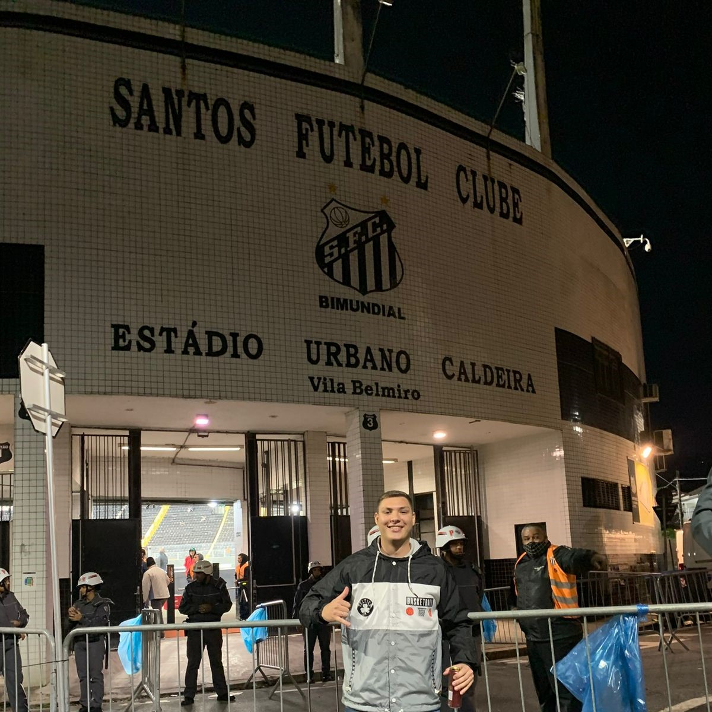

Nascido em 15 de Agosto de 2000, em São Paulo - SP. Atualmente morando em Pindamonhangaba-SP, em 2019 tive minha primeira experiência profissonal registrada no Exército Brasileiro. Concluindo o ano obrigatório, recebi a proposta para poder ser Soldado Efetivo Profissional, cargo em que fiquei por mais dois anos. Um lugar onde aprendi a ser resiliente, vencendo os medos e enfrentando as dificuldades.
Ao encerrar meu ciclo no Exército despertou uma paixão que sempre esteve presente na minha vida, a tecnologia me ajudou a me reencontrar e descobrir de fato o caminho que eu queria trilhar. Iniciei a faculdade de Engenharia de Software e procurei me aprofundar cada vez mais na área.
Amo estar próximo da minha família e amigos, adoro conhecer pessoas e suas histórias, compartilhar conhecimentos e experiências. Focado em conquistar meus objetivos e realizar meus sonhos. Sempre em busca de aprendizado, persistente e determinado.
Apaixonado por esportes, um dos meus sonhos é conhecer diversos estádios pelo mundo!
